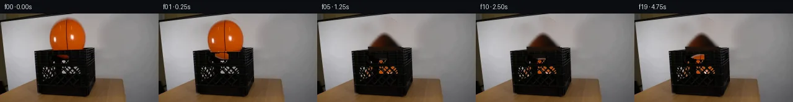

![首帧]()

Round 00
2026-11-04T19:55:06.248791+00:00像素候选变化代码 +184/−0inspection 更新
pixels ef9e5cffb79776e6 · code 18f578fae4d66bd7
查看本轮 generate.py 真实 diff
--- previous/generate.py +++ current/generate.py @@ -0,0 +1,184 @@ +from pathlib import Path + +import cv2 +import numpy as np +from PIL import Image, ImageDraw + +import artifact_io + + +ROOT = Path(__file__).resolve().parent +W, H = 256, 144 + + +def soft_ellipse_mask(cx, cy, rx, ry, feather=1.4): + yy, xx = np.mgrid[0:H, 0:W] + d = np.sqrt(((xx - cx) / rx) ** 2 + ((yy - cy) / ry) ** 2) + return np.clip((1.0 + feather / max(rx, ry) - d) * max(rx, ry) / feather, 0.0, 1.0) + + +def clean_plate(src): + """Remove the held ball while retaining the photographed crate and wall.""" + # Only inpaint the part in front of the wall; the crate is restored later. + wall_mask = np.zeros((H, W), np.uint8) + cv2.ellipse(wall_mask, (108, 40), (31, 34), 0, 0, 360, 255, -1) + wall_mask[59:, :] = 0 + plate = cv2.inpaint(src, wall_mask, 7, cv2.INPAINT_TELEA) + + # Remove the small orange remnant seen through the opening in frame zero. + hsv = cv2.cvtColor(src, cv2.COLOR_RGB2HSV) + orange = ((hsv[:, :, 0] < 25) & (hsv[:, :, 1] > 105) & + (np.indices((H, W))[0] >= 55) & + (np.indices((H, W))[0] <= 88) & + (np.indices((H, W))[1] >= 76) & + (np.indices((H, W))[1] <= 137)) + orange = cv2.dilate(orange.astype(np.uint8), np.ones((3, 3), np.uint8), iterations=1) + # A dark, slightly varied interior is more plausible behind the crate holes. + blurred = cv2.GaussianBlur(src, (0, 0), 6) + dark_interior = (blurred.astype(np.float32) * 0.18 + np.array([10, 10, 9])).clip(0, 255).astype(np.uint8) + plate[orange > 0] = dark_interior[orange > 0] + return plate + + +def make_ball_sprite(src): + """Recover the photographed ball and analytically complete its hidden underside.""" + sw, sh = 64, 68 + sprite = np.zeros((sh, sw, 4), np.uint8) + cx, cy = 31.0, 34.0 + yy, xx = np.mgrid[0:sh, 0:sw] + gx = xx + 77 + gy = yy + 6 + # Below the rear crate rim, mirror the real upper ball texture to complete the sphere. + sample_y = np.where(gy <= 58, gy, np.clip(np.rint(81 - gy), 8, 57)).astype(np.int32) + sample_x = np.clip(gx, 0, W - 1).astype(np.int32) + rgb = src[sample_y, sample_x].copy() + + # Gently attenuate the synthesized underside as it turns away from the light. + lower = np.clip((gy - 52) / 24.0, 0.0, 1.0)[..., None] + shade = 1.0 - 0.20 * lower + rgb = np.clip(rgb.astype(np.float32) * shade, 0, 255).astype(np.uint8) + + r = np.sqrt(((xx - cx) / 29.5) ** 2 + ((yy - cy) / 32.0) ** 2) + alpha = np.clip((1.035 - r) / 0.045, 0.0, 1.0) + sprite[:, :, :3] = rgb + sprite[:, :, 3] = np.rint(alpha * 255).astype(np.uint8) + return sprite + + +def crate_foreground(src): + """An alpha matte for black crate plastic that must pass in front of the ball.""" + yy, xx = np.mgrid[0:H, 0:W] + roi = np.zeros((H, W), np.uint8) + polygon = np.array([[54, 59], [151, 53], [157, 127], [145, 135], [61, 133]], np.int32) + cv2.fillConvexPoly(roi, polygon, 255) + rgb = src.astype(np.float32) + luma = 0.2126 * rgb[:, :, 0] + 0.7152 * rgb[:, :, 1] + 0.0722 * rgb[:, :, 2] + redness = rgb[:, :, 0] - np.maximum(rgb[:, :, 1], rgb[:, :, 2]) + # Exclude the original orange ball and its dark seams by growing its color support. + orange_core = ((redness > 28) & (rgb[:, :, 0] > 65)).astype(np.uint8) + ball_support = cv2.dilate(orange_core, np.ones((7, 7), np.uint8), iterations=1).astype(bool) + dark_alpha = np.clip((104.0 - luma) / 45.0, 0.0, 1.0) + dark_alpha[(roi == 0) | ball_support] = 0.0 + # Keep thin, antialiased plastic edges without making the open holes opaque. + dark_alpha = cv2.GaussianBlur(dark_alpha.astype(np.float32), (3, 3), 0.45) + dark_alpha[roi == 0] = 0.0 + return np.clip(dark_alpha, 0.0, 1.0) + + … diff truncated; 97 more lines …